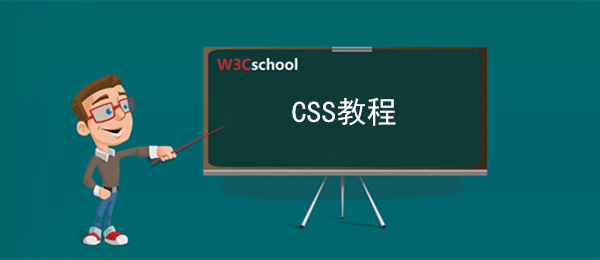

CSS教程
手册简介:
CSS 指层叠样式表（Cascading Style Sheets）。 在我们的 CSS 教程中，您将学习如何使用 CSS 同时控制整个站点的样式和布局。 通过与 XHTML 结合，CSS 可以帮助我们实行表现与结构分离的开发模式。 通过使用 CSS 来提升工作效率！
手册说明:
CSS教程简介
本教程主要描述如何通过CSS来大大提升网页开发的工作效率！在我们的 CSS 教程中，您会学到如何使用 CSS 同时控制多重网页的样式和布局。
本 CSS 教程包含了数百个CSS在线实例，通过本站的在线编辑器，你可以在线编辑CSS,并且可以在线查看修改后的效果。

CSS教程章节简介
本教程通过css基础教程、响应式设计原理及大量css实例让您更全面的学习css的相关知识
1. css教程
2. css响应式设计
3. css实例
什么是CSS？
1. CSS 是层叠样式表 ( Cascading Style Sheets ) 的简称。
2. CSS 是一种标记语言，属于浏览器解释型语言，可以直接由浏览器执行，不需要编译。
3. CSS 是用来表现HTML或XML的标记语言。
4. CSS 是由W3C的CSS工作组发布推荐和维护的.
5. CSS 是编程入门人员的必修课，运用CSS样式可以让页面变得美观。
6. CSS语法由三部分构成：选择器、属性和值： selector {property: value}
使用CSS的优势
内容与表现分离，有了CSS，网页的内容(XHMTL)与表现就可以分开了。
使用CSS可以减少网页的代码量，增加网页的浏览速度。
如何使用CSS？
有三种方法可以在站点网页上使用样式表：
1. 外联式Linking（也叫外部样式）：将网页链接到外部样式表。
2. 嵌入式Embedding（也叫内页样式）：在网页上创建嵌入的样式表。
3. 内联式Inline（也叫行内样式）：应用内嵌样式到各个网页元素。
其中，优先级：内联式 > 嵌入式 > 外联式
CSS官方信息
类 型: 计算机语言
作 者: w3c组织
CSS官网: http://www.w3.org/Style/CSS/
CSSAPI文档: http://www.w3cschool.cn/cssref
CSS在线工具
1. 在线CSS Lint(CSS代码优化)工具：http://www.w3cschool.cn/tools/index?name=csslint
2. 在线CSS代码压缩、格式化工具：http://www.w3cschool.cn/tools/index?name=cssbeauty
3. 校验CSS的正确性：http://jigsaw.w3.org/css-validator/